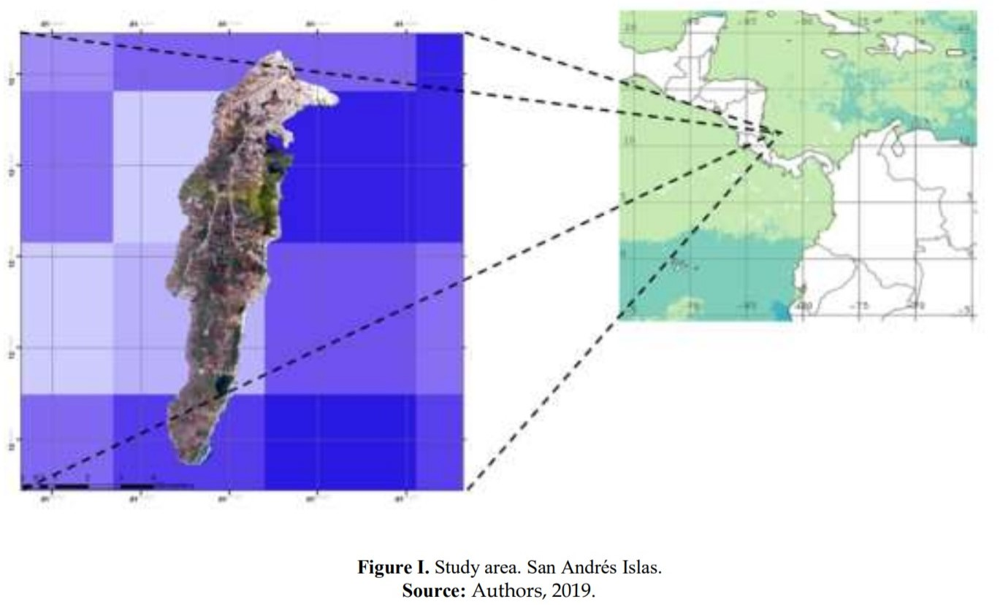
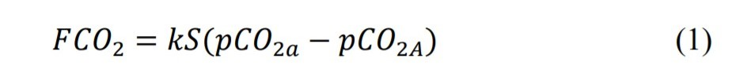
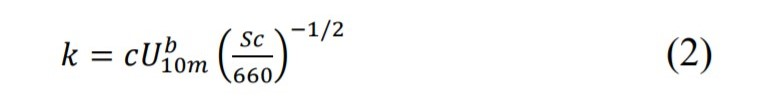
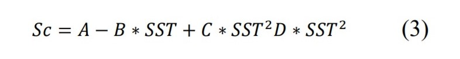
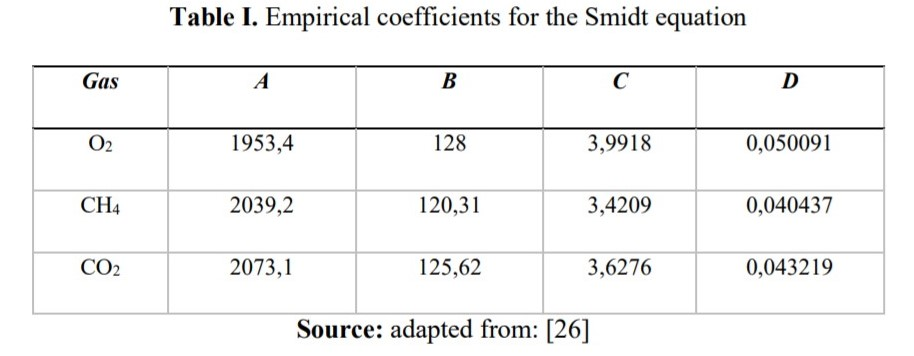
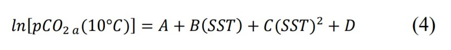

Introduction
The anthropogenic CO2 is emitted in an approximate amount of 35,000 million [1] tons each year, mainly
due to the combustion of fossil fuels such as coal, oil and gas. This chemical species has attracted the
attention of scientists around the world in recent years because a correlation has been observed between the
proportional increase in global temperature [2] and, the concentration of CO2 in the atmosphere [3], [4],
which is why it has been attributed as the main precursor to the phenomenon of climate change [5].
In this sense, several investigations show the effects of CO2 on the atmosphere, climate and its consequent
effects on some strategic ecosystems [6], [7], since around 46% of CO2 emitted (approximately 16,000
tons/year) [8] remain in the atmosphere for several centuries, there being no consensus around their
residence time; What is well known is the proportion of the remaining CO2: 54% [9] is absorbed in the
continental and marine ecosystems [8] - [10], the highest proportion being that ending in the oceans, which
is estimated between 30 and 40% of the total of the emitted CO2 [11], [12].
Therefore, understanding the behavior of CO2 in the Colombian maritime is essential for the conception of
conservation strategies and public policies [13], [14] that allow the safeguarding of marine ecosystems,
especially coral reefs [15]. This need is evident when reviewing environmental regulations in Colombia,
where there is a gap around the mechanisms for monitoring and mitigating acidification by CO2 in the
national maritime.
That is why this article aims to show the behavior of CO2 in one of the main areas of coral reef coverage,
San
Andres Islands, which is located in the Seaflower Biosphere Reserve, and which houses 3% of the biodiversity
of coral species and 33% of fish species, being one of the most diverse ecosystems in Colombia.
Materials and methods
Study area
The San Andres Islands Archipelago is located in the transition zone between the humid and dry tropics (12-
16 degrees’ latitude N. and 78-82 degrees’ latitude O.). Specifically, the island of San Andrés is 12.8 km
long
and 3 to 5 km wide, housing a diversity of marine ecosystems, the most relevant being coral reefs, prairie
beds, sandy shorelines and, mangroves (16). The study area is shown in Figure I

The CO2 flux is conditioned by the thermodynamic relationships between the solubility of CO2 in seawater,
the salinity of the environment, the differential of partial pressures of CO2 in the atmosphere and in the
marine environment, and wind speed [17]. Among this group of variables, the action of the wind allows the
interaction between the CO2 present in the atmosphere and the surface of some water, due to the action of
the waves
[18]. In this sense, the behavior of the CO2 flux [19] for the study area is defined from the expression
(Equation
1).

Where the CO2 flux (FCO2) is expressed in mmol /m2
/day. Where pCO2a is the partial pressure of CO2 in the
sea, pCO2A the partial pressure of CO2 in the atmosphere, S is the solubility of the gas and k is
the rate
of gas
transfer [20].
It is necessary to indicate that the CO2 flux values obtained through the previous one are negative when the
ocean captures CO2 and therefore is a sink of this, and they become positive when the study area emits CO2
product of ocean dynamics [21].
Due to the logistical difficulty related to taking the in situ data of the oceanographic variables described
in
equation 1, each variable was decomposed into a set of physicochemical factors that can be determined from
measurements made with remote perception [22].
In this way it has to be that k is a function of the sea surface temperature [23] according to the following
expression (Equation 2):

Where U10 is the wind speed at 10 m/s, Sc is the Schmidt number, which is a function of the SST,
and the
coefficient c and b, which are empirically obtained values.
The transfer speed of a gas, in this case CO2, can be estimated by the relationship between the wind speed
and
its influence on the transfer constant (k). In this way, it is possible to assume that k is proportional to
Sc, which
can be obtained from equation 3.

Thus, a third-order polynomial equation is established [24], which is based on the close dependence of
Schmidt's number on sea surface temperature (SST) [25] for various gases present in the environment, and
their
behavior in fresh and marine water [26]. whose empirical coefficients are shown in table I.

On the other hand, the second variable to consider is S, which depends mainly on temperature, pressure and
salinity. According to the above, the variation in the solubility of CO2 is relatively low in relation to
salinity,
since this tends to be constant, while the variation in solubility is more influenced by the sea surface
temperature
[27], Therefore, the solubility of studies based on an adaptation of Henry's law and the Bunsen solubility
coefficients [26], [28] were used, whose values can be seen in Table II:
Finally, the differential between the partial pressures of CO2 on the sea surface and the
atmosphere should
be
established, for which it is first proposed to calculate pCO2 (expressed in μatm) in the water
from the SST
[29]
(Equation 4).

Where: A = 6.030; B = -0.06076; C = 0.0007021; D = 0.001655
In this sense, pCO2 (expressed in μatm) will be assumed as constant (350.0 μatm) due to the low variability
of
the partial pressure of CO2 [30].
Sea surface temperature (SST) data was downloaded from the Moderate-resolution Imaging Spectroradiometer
(MODIS-AQUA) sensor [31] available at http://oceancolor.gsfc.nasa.gov/, with a spatial resolution of 4 km
and a daily temporary resolution.
On the other hand, wind speed data were obtained from The Modern-Era Retrospective analysis for Research
and Applications version 2 (MERRA-2), a re-analysis of atmospheric data estimated by NASA with the
Goddard Earth model Observing System Model, Version 5 (GEOS-5), where georeferenced wind speed
information is obtained with a monthly temporal resolution and 1/8 degrees of spatial resolution, available
from
January 1980 to the present, available at The GES- DISC Interactive Online Visualization and Analysis
Infrastructure (Giovanni) (https://giovanni.gsfc.nasa.gov/giovanni/), which processes climatological and
oceanographic data [32] obtained from remote sensors administered by NASA.
Finally, with the purpose of calculating CO2 for the San Andrés Islas maritime, 11 points of strategic
importance were taken for tourism and fishing activities, and three control points (C), distributed in the
coral
reef of the Island of San Andres The geographical location of these points is shown in table III.
Results and Discussion
The behavior of the SST obtained from the MODIS sensor data is shown in Figure II
Figure II shows the dynamics of SST between January and June 2019, showing oscillations between 24 and 31
° C for this time of year. It can be seen on the maps that the area where San Andrés Islas is located
presented an
SST of ± 24.5 ° C, with March to April showing average values of 32 and 33 ° C, which is shown in figure
III.
In the case of the study area, that is, the San Andrés Islas maritime, it was observed that the surface
temperature
ranges of the sea did not showconsiderable variation. The oscillation of the surface temperature of the sea
oscillated between 24 and 35 ° C, being the months of April and May the ones that showed higher
temperatures,
which conditions the CO2 flux to the marine environment.
On the other hand, Figure IV shows the wind speed map (U10) obtained from the re-analysis with the MERRA
model for the Colombian Caribbean.
In the same way, in figure V, the wind speed map (U10) obtained from the re-analysis with the MERRA model
for the sanctuary of San Andres Islands between January and June 2019 is shown.
From ArcGis 10.3, the satellite image information for the SST and U variables was extracted, and with the
georeferenced values for the months between January and June 2019, CO2 flux calculations were made using
equation 1 The georeferenced data of the CO2 flux is shown in Figure VI..
Figure VI shows that the Colombian Caribbean is not a considerable CO2 sink, at least for the selected
period
of time. In this sense, the average values of CO2 flux were in the range between 398 and 495ppm in the
oceanatmosphere direction, which would be showing that the occurrence of severe acidification phenomena for
the
Colombian Caribbean seafaring is despised. Despite this, it is necessary to carry out validations of the
satellite
data, as this would provide greater reliability to CO2 determinations through remote sensing techniques.
For the specific case of the San Andrés Islas maritime, little variability of the CO2 flux was observed,
based on
the average estimate derived from equation 1, is shown in table IV.
From the values of sea surface temperature and wind speed for the sampling points, the interpolation of the
CO2 flux was obtained, whose ranges are shown in Figure VII.
Conclusions
From the estimation of the CO2 flux for the San Andrés Islas maritime, it can be said that it does not
assume a
significant sink trend, since the values for the selected study period were always negative, whose
oscillation
was between 390 and 405 mmol / m2
/ day approximately, discarding considerable acidification processes per
CO2 account.
This tendency in the behavior of the CO2 flow positively favors the survival of the coral structures present
in the Seaflower reserve, since there is no considerable threat due to the alteration in the process of
bioaccumulation of calcium carbonate, the main precursor to coral reefs.
On the other hand, the impact of the CO2 flux on the abundance and distribution of ichthyo fauna is
uncertain, mainly of those species of commercial interest for the San Andres Islands root communities.
Finally, it is necessary to strengthen the research processes around the behavior of CO2 and its impact on
the marine and coastal ecosystems of the Colombian Caribbean maritime.
Acknowledgments
This article was made possible thanks to the sponsorship granted by COLCIENCIAS through the Call for
National Doctorates number 757 of 2016. Likewise, thanks are presented by the authors to COLFUTURO,
administrative operator of the sponsorship items of COLCIENCIAS.
To the Research Group on Environmental and Earth Sciences- ILAMA, for the academic support provided to
carry out this research.
References
[1] T.Takahashi, S.C Sutherland, R.Wanninkhof, C. Sweeney, R.A.Feely, D.W. Chipman, et al. Climatological
mean and decadal change in surface ocean pCO2, and net sea-air CO2 flux over the global oceans. DeepSea
Research
Part II: Topical Studies in Oceanography. 2009;56(8–10):554–77.
[2] R.Wanninkhof, L.Barbero, Byrne R, Cai WJ, W.J Huang, J.Z. Zhang , et al. Ocean acidification along the
Gulf Coast and East Coast of the USA. Continental Shelf Research. 2015;98:54–71. Available from:
http://dx.doi.org/10.1016/j.csr.2015.02.008
[3] T.H.Peng, R.Wanninkhof. Increase in anthropogenic CO2 in the Atlantic Ocean in the last two decades.
Deep-Sea Research Part I: Oceanographic Research Papers. 2010;57(6):755–70. Available from:
http://dx.doi.org/10.1016/j.dsr.2010.03.008
[4] X.A. Padin, C.G. Castro, A.F. Ríos, F.F. Pérez. Oceanic CO2 uptake and biogeochemical variability during
the formation of the Eastern North Atlantic Central water under two contrasting NAO scenarios. Journal
of Marine Systems. 2011;84(3–4):96–105. Available from:
http://dx.doi.org/10.1016/j.jmarsys.2010.10.002
[5] T.Takahashi, S.C. Sutherland, D.W. Chipman, J.G.Goddard, C.Ho. Climatological distributions of pH,
pCO2, total CO2, alkalinity, and CaCO3 saturation in the global surface ocean, and temporal changes at
selected locations. Marine Chemistry. 2014;164:95–125. Available from:
http://dx.doi.org/10.1016/j.marchem.2014.06.004
[6] J.E. Szulejko, P.Kumar, A.Deep, K.H Kim. Global warming projections to 2100 using simple CO2
greenhouse gas modeling and comments on CO2 climate sensitivity factor. Atmospheric Pollution
Research. 2017;8(1):136–40. Available from: http://dx.doi.org/10.1016/j.apr.2016.08.002
[7] H.W. Hu, C.A. Macdonald, P.Trivedi, I.C. Anderson, Y.Zheng, B.Holmes et al. Effects of climate warming
and elevated CO2 on autotrophic nitrification and nitrifiers in dryland ecosystems. Soil Biology and
Biochemistry. 2016;92:1–15.
[8] F.Dong, X.Zhu, W.Qian, P. Wang, J.Wang. Combined effects of CO2-driven ocean acidification and Cd
stress in the marine environment: Enhanced tolerance of Phaeodactylum tricornutum to Cd exposure.
Marine Pollution Bulletin. 2020;150(January).
[9] I.B. Orselli, R.Kerr, J.LL. Azevedo, F.Galdino, Araujo M, C.A.E Garcia . The sea-air CO2 net fluxes in
the
South Atlantic Ocean and the role played by Agulhas eddies. Progress in Oceanography.
2019;170(October 2018):40–52. Available from: https://doi.org/10.1016/j.pocean.2018.10.006
[10] A.Olsen, J.A.Triñanes, R.Wanninkhof. Sea-air flux of CO2 in the Caribbean Sea estimated using in situ
and remote sensing data. Remote Sensing of Environment. 2004;89(3):309–25.
[11] R. Mogollón, P.H.R. Calil. Modelling the mechanisms and drivers of the spatiotemporal variability of
pCO2 and air–sea CO2 fluxes in the Northern Humboldt Current System. Ocean Modelling.
2018;132(February):61–72. Available from: https://doi.org/10.1016/j.ocemod.2018.10.005
[12] H.Wang, X.Niu, X. Feng, R.J.Gonçalves, W.Guan. Effects of ocean acidification and phosphate limitation
on physiology and toxicity of the dinoflagellate Karenia mikimotoi. Harmful Algae. 2019;87(May).
[13] H.Y.Inoue, R.A.Feely, M.Ishii, T. Kawano, A.Murata, R. Wanninkhof . Chapter 1 Long-Term Trend of
the Partial Pressure of CO2 in Surface Waters and Sea-Air CO2 Flux in the Equatorial Pacific. Elsevier
Oceanography Series. 2007;73:1–26.
[14] H.Dannevig, K.Groven, G.K.Hovelsrud, A.K Lundberg, R.G. Bellerby, P.Wallhead, et al. A framework
for agenda-setting ocean acidification through boundary work. Environmental science & policy.
2019;95(January):28–37. Available from: https://doi.org/10.1016/j.envsci.2019.02.001
[15] G. Wilmsmeier. Climate change adaptation and mitigation in ports [Internet]. Maritime Transport and
Regional Sustainability. In Maritime Transport and Regional Sustainability. 2020. 133-150 p. Available
from: https://doi.org/10.1016/B978-0-12-819134-7.00008-3
[16] B.Gavio, S.Palmer , J.E. Mancera . Historical analysis (2000-2005) of the coastal water quality in San
Andrés Island, SeaFlower Biosphere Reserve, Caribbean Colombia. Marine Pollution Bulletin.
2010;60(7):1018–30. Available from: http://dx.doi.org/10.1016/j.marpolbul.2010.01.025
[17] R.R. Oliveira, L.P. Pezzi, R.B. Souza, Santini MF, Cunha LC, Pacheco FS. First measurements of the
ocean-atmosphere CO2 fluxes at the Cabo Frio upwelling system region, Southwestern Atlantic Ocean.
Continental Shelf Research. 2019;181(September 2018):135–42. Available from:
https://doi.org/10.1016/j.csr.2019.05.008
[18] O. Wurl, C. Stolle, C. Van Thuoc, The Thu P, Mari X. Biofilm-like properties of the sea surface and
predicted effects on air-sea CO2 exchange. Progress in Oceanography. 2016;144:15–24. Available from:
http://dx.doi.org/10.1016/j.pocean.2016.03.002
[19] B.G.T.Else, J.J.Yackel, T.N. Papakyriakou. Application of satellite remote sensing techniques for
estimating air-sea CO2 fluxes in Hudson Bay, Canada during the ice-free season. Remote Sensing of
Environment,. 2008;112(9):3550–62.
[20] Z. Sun, X.Wang, X.Zhang, H. Tani, E.Guo, S.Yin, et al. Evaluating and comparing remote sensing
terrestrial GPP models for their response to climate variability and CO 2 trends. Science of the total
environment. 2019;668:696–713. Available from: https://doi.org/10.1016/j.scitotenv.2019.03.025
[21] H.Chien, Y.Z.Zhong, K.H.Yang, H.Y.Cheng. Diurnal variability of CO2 flux at coastal zone of Taiwan
based on eddy covariance observation. Continental Shelf Research. 2018;162(August 2017):27–38.
Available from: https://doi.org/10.1016/j.csr.2018.04.006
[22] S.Yasunaka, A.Murata, E.Watanabe, M.Chierici, A. Fransson, S.Van Heuven, et al. Mapping of the air–
sea CO2 flux in the Arctic Ocean and its adjacent seas: Basin-wide distribution and seasonal to interannual
variability. Polar Science. 2016;10(3):323–34. Available from:
http://dx.doi.org/10.1016/j.polar.2016.03.006
[23] F. D’Ortenzio, D. Antoine, S.Marullo. Satellite-driven modeling of the upper ocean mixed layer and
airsea CO2 flux in the Mediterranean Sea. Deep Sea Research Part I: Oceanographic Research Papers.
2008;55(4):405–34.
[24] S.Xu, L.Chen, H.Chen, J.Li, W.Lin, D.Qi. Sea-air CO2 fluxes in the Southern Ocean for the late spring
and early summer in 2009. Remote Sensing of Environment. 2016;175:158–66.
[25]W.Evans, B.Hales, P.G.Strutton, D.Ianson. Sea-air CO2 fluxes in the western Canadian coastal ocean.
Progress in Oceanography. 2012;101(1):78–91. Available from:
http://dx.doi.org/10.1016/j.pocean.2012.01.003
[26] R.Wanninkhof, G.H.Park, Takahashi T, Feely RA, Bullister JL, Doney SC. Changes in deep-water CO2
concentrations over the last several decades determined from discrete pCO2measurements. Deep Sea
Research Part I: Oceanographic Research Papers. 2013;74:48–63. Available from:
http://dx.doi.org/10.1016/j.dsr.2012.12.005.
[27] R.Wanninkhof, A.Olsen, J.Triñanes. Air-sea CO2 fluxes in the Caribbean Sea from 2002-2004. Journal
of Marine Systems. 2007;66(1–4):272–84.
[28] A.F.Ríos, F.F.Pérez, M.Álvarez, L.Mintrop, M.GonzáleZ-Davila, J.M. Santana-Casiano, et al. Seasonal
sea-surface carbon dioxide in the Azores area. Marine Chemistry. 2005;96(1–2):35–51.
[29] L.Chen, S.Xu, Z. Gao, .HChen, Y. Zhang, J.Zhan, et al. Estimation of monthly air-sea CO2 flux in the
southern Atlantic and Indian Ocean using in-situ and remotely sensed data. Remote sensing of environment.
2011;115(8):1935–41. Available from: http://dx.doi.org/10.1016/j.rse.2011.03.016
[30] N. Metzl, C.Brunet, A.Jabaud-Jan, A. Poisson, B.Schauer. Summer and winter air-sea CO2 fluxes in the
Southern Ocean. Deep Sea Research Part I: Oceanographic Research Papers. 2006;53(9):1548–63.
[31]H.Sun, Z.Gao, D.Qi, S.Chen , L. Chen, W.J. Cai. Surface seawater partial pressure of CO2 variability and
air-sea CO2 fluxes in the Bering Sea in July 2010. Continental Shelf Research. 2020;193(July 2019).
[32] A. Soloviev ,M. Donelan, H.Graber, B.Haus, P.Schlüssel. An approach to estimation of near-surface
turbulence and CO2 transfer velocity from remote sensing data. Journal of Marine Systems. 2007;66(1–
4):182–94.

 Ph.D Candidate in Environmental
Sciences, juan.popayan@correounivalle.edu.co
Ph.D Candidate in Environmental
Sciences, juan.popayan@correounivalle.edu.co ORCID:
0000-0001-7110-3371.
Universidad del Valle, Santiago de Cali, Colombia.
ORCID:
0000-0001-7110-3371.
Universidad del Valle, Santiago de Cali, Colombia.